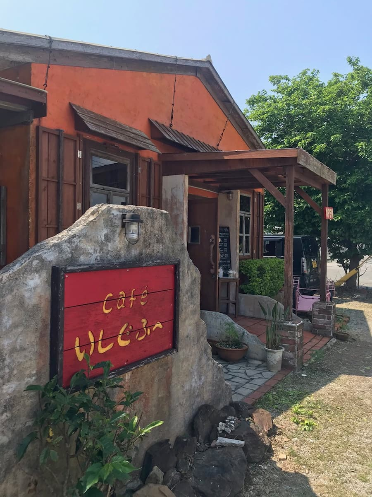
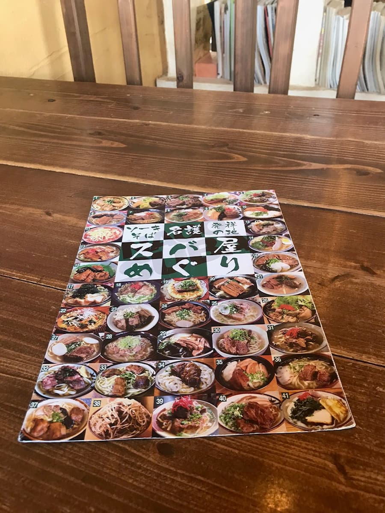
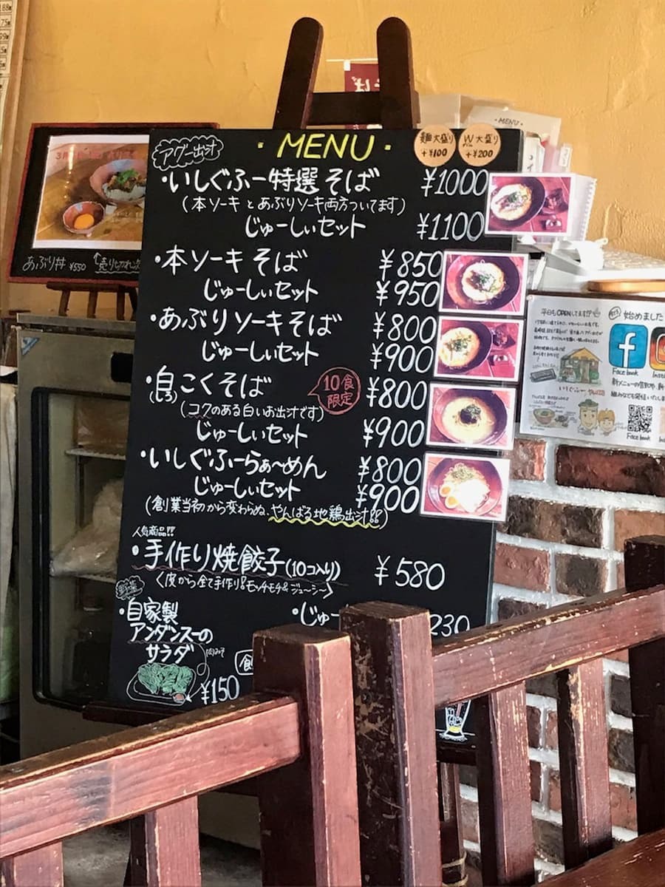
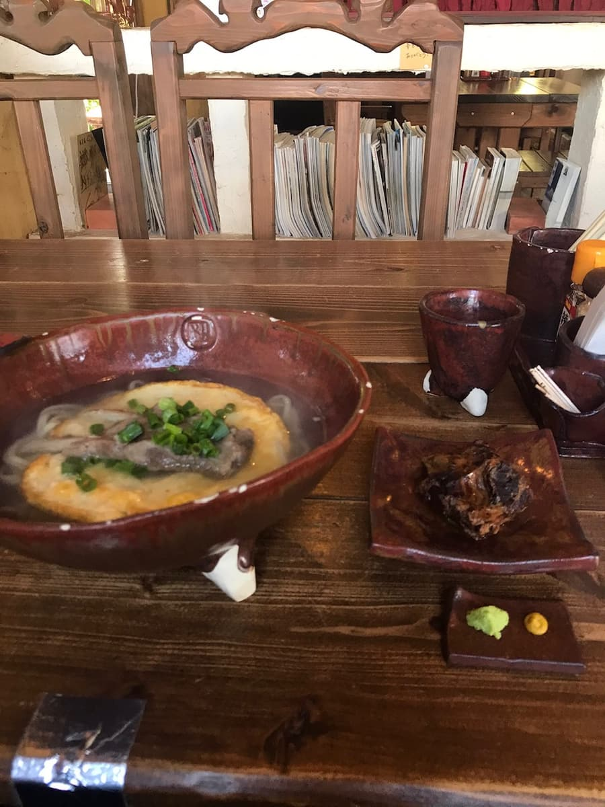

It was introduced in the "Nago City Soba Map", and I ate here in March 2021 😄


"Ishigufu" is the shop of the "First Okinawa Soba King" and has branches in various areas. This time I ordered the "Ishigufu Special Selection Soba (with both bone-in pork ribs (hon-soki) and seared soki)".


In the clear agu pork broth, the handmade noodles are smooth and firm and tasty 😄 The seared soki is melt-in-your-mouth, and the wasabi and mustard are an accent not found at other shops, nice 😄
Rating (9/15): "Kanucha Bay Resort" is also nearby, so how about it when you're staying there, driving along the east coast of northern Okinawa Island, or sightseeing?
PS: The handmade noodles are very firm, so depending on personal taste, some people may find them on the hard side.
Noodles: ★★★☆☆（3）
Soup: ★★★☆☆（3）
Toppings: ★★★☆☆（3）